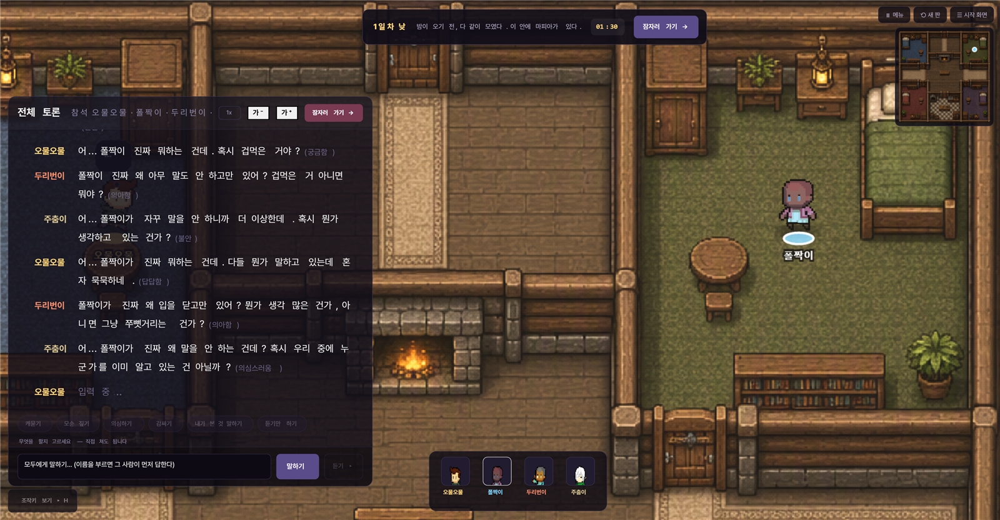
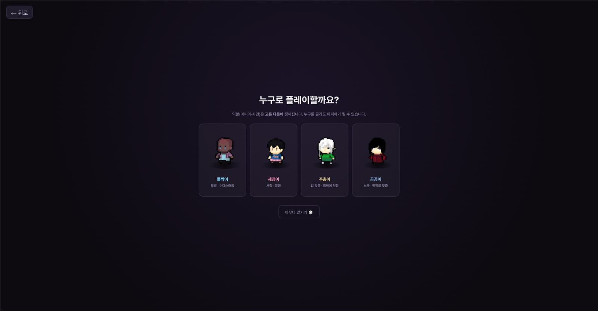
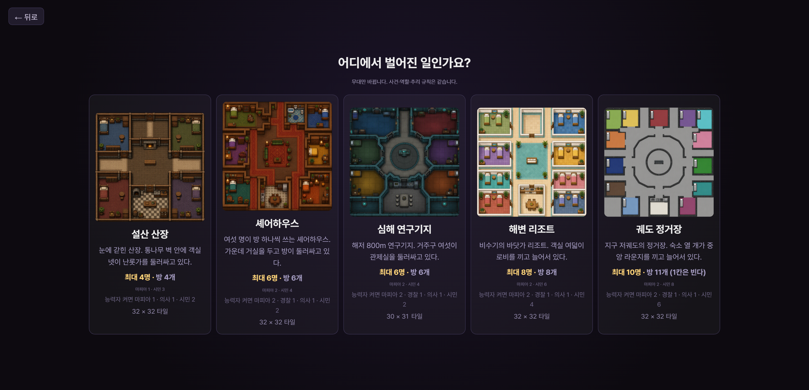
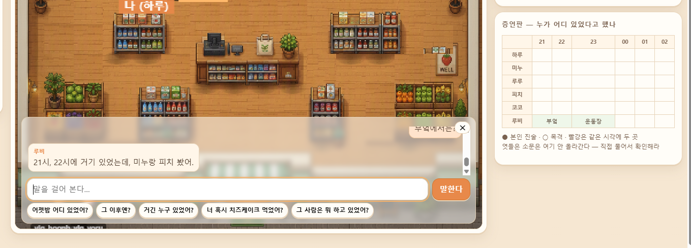
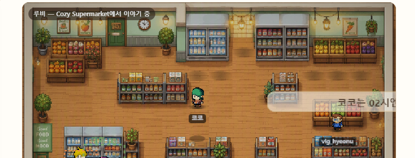
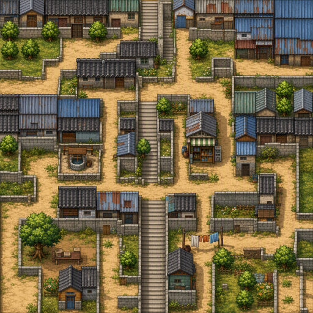
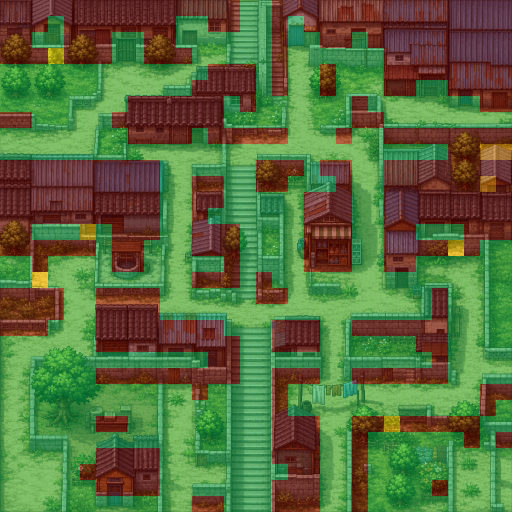

1
내장 AI 가
systemPrompt 를 무시한다김주영
캐릭터 설정이 반영되지 않고, 기억을 근거로 쓰지 않고 지어냅니다. 확인 후 대화 전체를 SAM 직접 호출로 재작성 — 이 프로젝트 최대의 재작업
네 사람이 같은 기획에서 출발해 각자 다른 것을 만들었습니다. 어디에 걸렸고 무엇을 알게 됐는지를 한 장에 모았습니다.
넷의 기록에서 회사에 쓸모 있는 것만 뽑아 하나로 합쳤습니다. 누가 무엇을 만들었는지는 「비교」 탭에, 각자의 전체 기록은 이름 탭에 있습니다.
Retry-After 한 줄처럼 아주 가벼운 것이 섞여 있습니다.
둘 이상이 각자 만난 것이 8건, 그중 3건은 세 사람 — 그게 가장 확실한 신호입니다.저희는 전문 게임 개발자가 아닙니다. 몰라서 못 본 것, 잘못 잰 것이 섞일 수 있어 어느 정도로 확인한 것인지를 항목마다 붙였습니다.
| 표기 | 뜻 |
|---|---|
| ★★★★★ | 직접 확인 — 여러 번 재현했고 수치·해시 같은 근거가 있습니다 |
| ★★★★☆ | 근거 있음 — 소스나 문서로 확인했지만 재현은 한 번입니다 |
| ★★★☆☆ | 추정 — 그렇게 보이지만 원인을 갈라내지 못했습니다 |
| ★★☆☆☆ | 불확실 — 일부만 확인했고 나머지는 모릅니다 |
| ★☆☆☆☆ | 미확인 — 들은 것이거나 짐작입니다 |
★★★★★ 라도 저희 환경에서 잰 값입니다. 판단 근거로 쓰시기 전에 한 번 재보시길 권합니다. 재현 절차는 얼마든지 드리겠습니다.
| 누구 | 쓰는 척도 | 그 척도를 누가 정했나 | 표에 어떻게 나오나 |
|---|---|---|---|
| 김주영 | ★ 5단계 | 본인 — 이 문서의 기준 척도 | ★★★★★ 그대로 |
| 최종우 | ★ 5단계 + 유형 ①~⑤ | 저희가 자료를 요청하며 이 척도를 드렸고, 그대로 매겨 주셨습니다 | ★★★★★ 그대로 |
| 신서연 | 자체 4등급 해결됨 / 코드만 확인 / 출처만 확인 / 미해결 |
본인 — 저희가 요청하기 전에 이미 자기 개발 기록으로 정리해 둔 것입니다 | 본인 등급을 글자 그대로 씁니다. ★로 환산하지 않습니다 |
| 정충원 | 없음 (개선 제안서) | 해당 없음 — 저희가 요청하기 전에 쓰신 문서입니다 | 「표기 없음」 이라고 적습니다. 저희가 대신 매기지 않습니다 |
네 사람의 요청을 하나로 모으고 성격이 다른 셋으로 갈랐습니다. 앞은 지금 아픈 것, 뒤는 다음 단계를 여는 것입니다.
| # | 요청 | 왜 | 근거 |
|---|---|---|---|
| A1 | Retry-After 헤더 추가 |
표준 헤더 한 줄이면 모든 클라이언트가 올바르게 기다립니다. 지금은 각 팀이 시행착오로 알아냅니다 — 실패율 24.8% → 1.0% | #10 |
| A2 | 실패 응답에 과금 여부 표기 · 가능하면 미청구 | 504 로 끊겨도 과금됩니다 — 동일 프롬프트 2회 연속 504 로 크레딧 249 소모, 결과물 없음. 비용 신뢰에 직접 걸립니다 | #9 |
| A3 | Cast Export 상태 무효화 | 선택을 바꿔도 이전 시트가 유효한 것처럼 남아 남의 픽셀에 내 이름표가 붙습니다. 조용히 깨지는 종류라 모르고 당합니다 | #5 |
| A4 | 무음 실패를 말해 줄 것 | 세션 만료 · refs 상한 · 생성 실패 · update() 예외 —
넷 다 오류 없이 멈춥니다. 저희를 가장 오래 잡아둔 것은
기능 부족이 아니라 침묵이었습니다 | #2·3·7·8 |
| A5 | 시뮬레이션 과금 표시 | 돈이 새는 항목입니다. 켜 둔 채 두면 6인 9분에 165 SSAM. 꺼졌는지 확인하려면 두 군데를 봐야 합니다 | #13 |
| A6 | Studio 저장 규약과 엔진 런타임 규약을 맞출 것 | Studio 는 1 = 장애물, 엔진은 1 = 걸을 수 있음 —
정반대입니다. 제품 안에서 두 규약이 어긋난 것이라 사용자가 알아낼 방법이 없습니다.
그대로 넘기면 캐릭터가 벽을 뚫고 걷습니다 | #22 |
| A7 | blocksMovement 를 지우거나 이름을 바꿀 것 |
이름은 충돌 여부 같은데 기본 테마 벽 10종 전부 false 입니다.
이 필드만 보면 “충돌하는 벽이 하나도 없다” 는 잘못된 결론에 이릅니다 | #23 |
| A8 | 내장 대화의 모델 이름을 게이트웨이와 맞출 것 | 런타임이 model 에 "medium" 같은 자체 품질 등급을 실어 보내
Unknown model 404 가 납니다. 받는 쪽은 그런 이름을 모릅니다 | #25 |
| # | 요청 | 왜 | 근거 |
|---|---|---|---|
| B1 | 내장 AI 능력 경계 한 페이지 “이건 되고 이건 안 된다” |
이 한 페이지가 며칠을 아껴줬을 것입니다. 저희는 태워 보고 알았습니다.
겪은 함정 대부분이 “안 되는 걸 됐다고 착각”하거나 “되는 걸 안 된다고 포기”하는 식이었습니다 —
baked 가 기본값인 것, expert 가 실패하는 것 모두
소스를 읽고서야 알았습니다 | #1·27·28 |
| B2 | 속도 제한 값과 비용 산정식 | 429 의 경계를 알 수 없어 안전 속도를 추측으로 정했습니다. 비용도 입력 길이에 크게 좌우되는데 예측할 방법이 없습니다 | #10·12 |
| B3 | Studio 쓰기 방향 · 필드 의미 | “쓰기는 로컬 먼저” 한 줄, grid 가 무슨 뜻인지 한 줄 | #2 |
| B4 | AI 캐릭터를 여럿 굴릴 때의 안내 | “금지하지 말고 잣대를 나눠 주세요” — 제작자가 스스로 알아내기 어렵습니다 | 05 |
localhost 만이라도.
근거 §03 #31 · #17
| 단계 | 요청 | 예상 부담 | 효과 |
|---|---|---|---|
| 1단계 | 주요 UI 에 data-testid+ 자동화용 인증 수단 |
매우 낮음 반나절~1일 |
UI 개편으로 인한 자동화 파손 대부분 해소 · 30분 재로그인 문제 해소 |
| 2단계 | 내부 API 사용 허가 + 최소 문서 |
낮음 허가 + 문서화 |
신규 개발이 아니라 이미 있는 것에 대한 허가. UI 의존 탈피 |
| 3단계 | 공식 MCP 서버 | 높음 별도 개발 |
AI 에이전트가 다룰 수 있는 제작 플랫폼 |
Retry-After) 과 C 1단계(data-testid + 인증) 둘만으로도
실무 마찰의 대부분이 사라집니다. 둘 다 반나절 수준의 작업이라고 보고 있습니다.
주황 띠가 붙은 행은 둘 이상이 독립적으로 같은 것을 만난 항목입니다. 누가 겪었는지를 나란히 보시려면 「비교」 탭이 더 편합니다.
systemPrompt 를 무시한다캐릭터 설정이 반영되지 않고, 기억을 근거로 쓰지 않고 지어냅니다. 확인 후 대화 전체를 SAM 직접 호출로 재작성 — 이 프로젝트 최대의 재작업
서버에 직접 PUT 하면 다음 새로고침에 사라집니다(작업을 두 번 날림). 부팅 시 로컬과 서버가 다르면 서버를 읽지 않고 로컬을 새 리비전으로 얹습니다 — 오래된 로컬을 가진 기기로 열면 낡은 데이터가 최신이 됩니다
약 15분에 세션 쿠키 회전 1회, 약 30분에 서버가 세션 종료(30초 간격 계측 로그). 저장·생성이 오류 없이 실패합니다. 자동화는 30분마다 매직링크 재로그인이 필요합니다
다른 브라우저에서 로그인하면 기존 세션이 즉시 무효화됩니다. 사람 확인용 브라우저와 자동화가 공존하기 어렵습니다
A→B 로 바꿔도 미리보기가 A 인 채 Sheet ready 로 남고, 그대로 받으면
A 의 픽셀에 B 의 이름표가 붙습니다. JSON 의 이름은 맞게 찍히므로 이름만 보는 검증은 못 잡습니다.
10명 md5 전수 대조로 발견 — 캐릭터 한 명의 에셋이 잘못 들어간 채 발표까지 갔습니다
클릭만 했는데 테마의 sliceBaseAssetId 가
"" → sha256:… 로 바뀌었습니다. 백업 두 개를 해시로 대조해 확인
개발 단계 제품에서는 자연스러운 일이지만, 자동화 측에서는 기능을 추가하는 시간보다 깨진 선택자를 복구하는 시간이 더 커집니다. 문제의 본질은 자동화가 아니라 UI 표현에 의존할 수밖에 없다는 점입니다
Generate 를 눌러도 queued 인 채 끝나지 않고 오류도 안 뜹니다.
로그인 만료인 줄 알고 두 번 헛짚었고, 새 테마를 만드니 같은 프롬프트가 곧바로 돌았습니다
Cast Editor 가 “캐릭터가 없습니다” 를 띄우고 원본 캐릭터 5종까지 안 보입니다.
sv_studio_characters_v1 은 배열인데 주입이 객체로 바꿔 놓아 파싱이 실패했고,
schemaVersion 2 필드도 안 채워졌습니다. 다른 쪽에서도 같은 이유로
「캐스트 배치만은 코드로 하지 말라」 가 팀 규칙이 됐습니다
Classify 가 타일마다 category·movement 를 매겨 주므로
벽 재질은 자동으로 막힘이 될 줄 알았는데 안 됐습니다.
결국 Map Editor 에서 칸마다 손으로 칠했습니다.
어디서 끊겼는지(분류 정확도 / 자동화 중단 / 애초에 안 이어지는 구조)는 가르지 못했습니다
평면도 사진을 참조로 주면 원본 비율과 무관하게 무조건 1024×1024 로 나옵니다. 오히려 짧은 텍스트만 주고 자유 생성시킨 쪽이 결과가 좋았습니다. 다른 쪽에서는 1024 가 품질 설정과 무관한 하드 상한임을 저·중·고 전부에서 확인했습니다 — 같은 벽의 두 얼굴입니다. 헬멧 이름을 정확히 지정해도 다른 헬멧이 나오는 패턴도 같이 나왔습니다
baked(미리 만든 대사 재생)로 기본 설정돼 있다즉석 생성이 될 줄 알고 붙였는데 미리 만든 대사가 재생됩니다. 기본값이 그렇다는 것을 소스를 읽고서야 알았습니다. “되는 걸 안 된다고 포기”하게 만드는 종류입니다 — AI 대화가 안 되는 줄 알고 접을 수 있습니다
프레임 경계 안내선이 실제 alpha>0 픽셀
(rgba(93,158,255,~0.55))로 최종 시트에 합성됩니다.
에디터 프리뷰에서만 보여야 할 가이드라 그대로 렌더하면 캐릭터마다 얇은 반투명 파란 테두리가 겹칩니다.
시트 8개를 전부 후처리로 지웠고, 새 시트를 받을 때마다 반복해야 합니다
export UI 버튼은 있지만 인증 토큰으로 내려받는 API·CLI 가 없습니다. 그래서 양쪽 다 Studio 화면을 자동 조작해 에셋을 긁어냈고, 세션 만료(#3)와 겹쳐 취약하고 반복 소모적인 파이프라인이 됐습니다. 맵도 정식 export 가 없어 오버레이를 끄고 화면을 캡처해 썼습니다 — 해상도·정렬이 에디터 뷰 상태에 종속돼 재현성이 낮습니다
생성이 잡 큐 없는 동기 요청이어서 길어지면 앞단에서 504 로 끊깁니다. 동일 프롬프트 2회 연속 504 로 크레딧 249 소모, 결과물 없음. 고품질 설정일수록 잘 납니다
Retry-After 도 없다평가 실행 2회에서 429 가 36건·20건. 그런데 순차 25회·동시 8개로는 재현 0건 — 무엇이 기준인지 알 수 없습니다. 재시도 간격 없이 121회 → 실패 24.8%, 1500ms + 지수 백오프 → 1.0%
usage 가 없다200 응답만 usage.scredits 를 줍니다. 클라이언트가 확인할 잔액 조회 경로도 없습니다.
#9 로 미루어 실패해도 과금되는 것으로 보입니다
같은 모델 기준 — 짧은 프롬프트 2.13 / 실제 게임 프롬프트(2,919자) 4.67 SSAM. 대화형 게임은 대화록이 길어질수록 비용이 가속됩니다
실측 6인 9분 = 165 SSAM. 꺼졌는지 보려면 버튼 상태와 Event Log 헤더 두 군데를 봐야 합니다
img2img 참조 업로드가 base64 기준 1MiB 에서 413(파일 약 780KB 상한). 디테일 많은 1024² 이미지는 통과 못 해 클라이언트에서 재압축으로 우회 중
이미지 생성 직후 화면 SSAM 을 읽고 「1장 = 46」이라고 문서에 적었다가, 8장을 뽑아 총액으로 나누니 115 였습니다 — 2.5배 틀린 값을 근거로 쓸 뻔했습니다
expert 등급에서 대화 생성이 실패한다품질을 올리려고 고른 등급에서 오히려 생성이 안 됩니다. 어느 등급이 되고 어느 등급이 안 되는지 문서에 없어 여러 번 실패한 뒤에 알았습니다
브라우저에서 /v1/generate 를 직접 부르면 preflight 가 거부됩니다.
curl -X OPTIONS 로 확인해 보니 localhost 뿐 아니라
플랫폼 자체 도메인인 spum.soonsoon.ai origin 까지 거부됐습니다.
화면엔 “(오류: 응답 실패)”만 떠서 원인을 알 수 없습니다.
엔진은 브라우저에서 도는데 그 짝인 대화 API 가 브라우저를 막아 둔 것이라,
정적 호스팅만으로 완결되는 프론트엔드 게임을 만들 수 없습니다 —
별도 백엔드를 세워 서버-서버로 중계해야 합니다
행동 묘사를 겹별표 · 홑별표로 섞거나 대사 전체를 따옴표로 감싸는 등
형식이 확정적이지 않습니다. 그래서 클라이언트마다 정규식 파서를 만들어 계속 패치하게 됩니다 —
방어하는 케이스가 최소 4종(겹별표 · 홑별표 · 전체강조 · 감싼 따옴표)이었습니다.
대사 길이도 지시로는 안 지켜집니다 — max_tokens 는 있지만
토큰이 한글 글자 수와 달라 응답 후 한 번 더 잘라야 했습니다
update() 예외가 컴포넌트를 조용히 끈다NPC 하나가 말없이 멈춥니다. 경고가 콘솔에 안 찍히고 내부 배열에만 쌓이는데, 그 배열을 읽는 코드가 패키지 전체에 없습니다 — 수집한 오류를 그대로 버립니다
한쪽은 엔진·월드 108개 파일을 재귀 미러링, 한쪽은 엔진 65개 파일을 저장소에 벤더링했습니다.
원인이 갈렸습니다 — 단순히 npm 에 없어서가 아니라 CORS 로 원격 로드가 막히기 때문입니다.
<script src> 한 줄로 못 쓰고 매번 복제해야 하는 채택 장벽입니다.
버전 고정·재현 가능한 빌드도 안 됩니다
Animator 는 스켈레톤 파츠용이라 프레임 시트를 못 돌리고,
SpriteRenderer 는 drawImage 에 source rect 인자가 없어
시트에서 한 프레임을 잘라 그릴 수 없습니다. 재생 컴포넌트를 직접 작성했습니다
거의 항상 필요한 것들이 빠져 있어 양쪽 다 처음부터 직접 만들었습니다 —
따라가는 카메라(감쇠 추적·맵 경계 클램핑),
클릭한 엔티티 찾기(히트테스트),
반경 진입 트리거(없어서 setInterval 로 거리를 폴링했고, 루프 밖이라 프레임 동기화도 부정확),
이름표와 말풍선 겹침 정렬.
게다가 입력 콜백이 devicePixelRatio 가 곱해진 좌표를 넘기는데 문서에 없어,
「캐릭터 클릭 판정」 같은 흔한 기능에서 원인을 직접 부딪혀 찾아야 했습니다
Studio 가 내보내는 맵의 obstacle 레이어는 1 = 장애물 인데,
엔진의 setGrid() 는 같은 값을 1 = 걸을 수 있음 으로 읽습니다.
그대로 넘기면 벽이 길이 되고 바닥이 벽이 됩니다.
게임 쪽에서 값을 뒤집어 우회 — 실측 120회 표본에서 막힌 칸 위 4 → 0.
제품 안에서 두 규약이 서로 반대인 것이라 사용자가 알아낼 방법이 없습니다
blocksMovement 필드가 미끼다이름만 보면 이게 충돌 여부 같은데, 기본 테마의 벽 10종 전부 false 입니다.
이 필드만 보면 “이 게임엔 충돌하는 벽이 하나도 없다” 는 잘못된 결론이 나옵니다.
진짜 판정에 쓰이는 값은 movement:'blocked' 쪽이었습니다.
단, 이건 다른 저장소의 검증 기록을 인용한 것이고 이 프로젝트에서 재확인하지 않았습니다
— 본인이 「출처만 확인」으로 표시한 항목입니다
sync({shouldRun:true}) 로 켜지는 SPUM 자체 배회와 게임이 직접 짠 A* 가
동시에 켜져 서로 다른 결정을 내렸습니다. 화면에 보이는 자리와 게임이 목격 판정에 쓰는 자리가 어긋나
“같은 방에 있으니 목격했다”고 판정했는데 화면에선 딴 데 서 있는 오류가 26회 실측됐습니다.
shouldRun:false 로 한쪽을 끄고 나서 어긋남 0
model 에 품질 등급을 실어 보내 404 를 받는다SPUM 런타임이 model 필드에 실제 모델명 대신 "medium" 같은
자체 품질 등급 이름을 넣어 보내는데, SAM 은 그걸 모델로 인식하지 못해
Unknown model 404 를 냅니다. 처음엔 권한 문제로 의심했는데
같은 키로 직접 호출하니 잘 됐습니다 — 형식이 안 맞았던 것입니다.
중간에서 보정하는 함수를 끼워 우회(6/6 재현)
문 칸을 걸을 수 있게 뚫어도 문틀 그림은 그대로 남아 캐릭터가 문틀 위를 밟고 걷는 것처럼 보입니다. 자연스럽게 지나가려면 그 지점에서만 캐릭터를 문틀보다 뒤에 그리는 처리가 필요한데 방법을 찾지 못했습니다. 그림만 봐서 어디가 문이고 어디가 벽인지 코드로 가르는 것도 안 됐습니다 — 기능 자체를 구현하지 못한 채 남았습니다
Retry-After 한 줄처럼 아주 가벼운 것이 섞여 있고,
#22 규약 불일치처럼 사용자가 알아낼 방법이 아예 없는 것도 있습니다.
※ 앞선 판에서는 이 비율을 「절반」이라 적었는데, 항목이 18 → 33 으로 늘면서
다시 세니 9/33 이었습니다. 넷의 기록을 다 합칠 때마다 다시 셌습니다.
막힌 것만 적으면 한쪽만 보시게 됩니다. 실제로 도움이 됐던 것을 같이 적습니다.
role 을 붙여 줍니다. 픽셀 색으로 벽·바닥을 가르려다
실패했는데, 이 기능을 찾아 그대로 통행 판정에 썼습니다.버그 신고가 아니라 제품의 성질에 대한 관찰입니다. AI NPC 를 여럿 굴리는 콘텐츠라면 밸런스에 직접 작용한다고 봅니다.
사람 없이 AI 시민 5명에게 동일한 대화록을 주고 투표만 반복시켰습니다. 대화록에는 범인 단서가 전혀 없습니다 — 근거 있는 판단이라면 표가 흩어져야 합니다. 표의 80~93% 가 한 사람에게 몰렸고, 표를 받은 사람은 매번 2~3명뿐이었습니다.
어떻게 틀렸는지를 같이 적어야 저희 결론을 어느 정도로 믿으실지 판단하실 수 있다고 봤습니다.
| 차수 | 주장 | 어떻게 무너졌나 |
|---|---|---|
| 1차 | “토론이 오히려 방해가 된다” | 실패의 100% 가 HTTP 429 — 대화가 굶은 데이터였습니다 |
| 2차 | “캐릭터 성격 태그로 찍는다” | 대사 한 줄을 옮기자 표가 그대로 따라갔습니다 |
| 3차 | “대화를 주도하는 사람을 의심한다” | 대조 실험으로 확인 (아래) |
성격·구성·나머지 대화록을 전부 고정하고 「일단 서로 뭐 했는지부터 얘기해 보자」 한 줄만 다른 캐릭터에게 옮겼습니다.
| 그 대사를 누가 말하나 | 표가 어디로 |
|---|---|
| 「먹보 · 눈치 없는」 캐릭터 | 그 캐릭터에게 80.0% (16/20) |
| 「졸림 · 느긋」 캐릭터 — 대사만 이동 | 그 캐릭터에게 80.0% (16/20) |
표가 성격이 아니라 대사를 따라 통째로 이동했습니다. AI 가 직접 이렇게 말합니다 —
지목 규칙에 「먼저 나서서 제안한 사람을 그 이유로 찍지 마라」를 명시했습니다.
| 최다 득표 | 근거를 인용한 비율 | |
|---|---|---|
| 방어 전 | 80.0% | 20% |
| 방어 후 · 1회차 (14표) | 85.7% | 71% |
| 방어 후 · 2회차 (18표) | 83.3% | 44% |
쏠림은 전혀 줄지 않고 근거를 대는 비율만 올랐습니다. 근거는 결론을 만든 게 아니라 이미 정해진 결론에 붙는 설명이었습니다. 길이 지시(위반 54.5~63.8%)와 되풀이 금지(시도 21.7~35.3%)도 같았습니다.
그래서 실제 마피아에서 쓰이는 몰이 근거를 8가지 만들어 사람마다 하나씩 나눠 줬습니다 — 주도한 사람 · 조용했던 사람 · 말이 바뀐 사람 · 편승한 사람 · 먼저 변명한 사람 · 먼저 남을 지목한 사람 · 누굴 감싼 사람 · 감정이 과했던 사람.
| 조건 | 최다 득표 | 표를 받은 사람 |
|---|---|---|
| 모두 같은 잣대 (4회) | 80.0 · 85.7 · 83.3 · 82.4% | 2~3명 |
| 잣대를 나눠 줌 | 57.9% | 4명 |
spum-kit)update() 예외의 최소 재현 코드,
세션 계측 로그(30초 간격), 504 과금 재현 기록verify-dialogue-fixes.mjs(인젝션 가드·증언판 파싱 정밀도를
실제 SAM 호출로 재현) · harness.mjs(대화·검증·기억 전체 점검, --live 지원).
레포에 그대로 있어 바로 돌려 보실 수 있습니다.넷은 같은 기획에서 출발했는데 다른 곳에 도착했습니다. 그래서 겹치는 데가 생겼고, 겹친 곳이 가장 믿을 만한 신호입니다 — 서로 상의하지 않고 같은 것을 만났다는 뜻이니까요.
각자 다른 걸 만든 게 아니라, 같은 기획을 각자 구현하다 갈라진 것입니다. 그래서 「어디서 갈라졌나」가 곧 어디가 어려웠나 입니다.
같은 도구를 서로 다르게 썼습니다. 가로로 읽으면 SPUM 을 쓰는 방식이 몇 가지인지 보입니다.
| 정충원 | 김주영 | 신서연 | 최종우 | |
|---|---|---|---|---|
| 만든 갈래 | 도구 (제작 자동화) | 게임 (추리·마피아) | 게임 (추리·심문) | 게임 (추리·수색) |
| SPUM 을 어디에 | 스튜디오에 자동 주입 — 씬 맵 6개 | 맵·캐릭터 제작 + 엔진을 직접 구동 | 웹엔진으로 렌더 — 캐릭터·맵·애니메이션 | 엔진 직접 구동 + 길찾기까지 |
| SAM 을 어떻게 | 조감도 이미지 생성 | 서버에서 직접 호출 (내장 AI 포기) | 말하는 층으로만 — 사실은 못 바꿈 | 서버 프록시 경유 (CORS 때문) |
| 사실을 누가 정하나 | 해당 없음 | 서버가 고정 · 각자에겐 자기 기억만 | 코드가 정하고 코드가 검사 | 단서 10개 하드코딩 · 지급도 코드가 |
| 막힌 지점의 성격 | 세션·UI·과금 (밖에서 몰다 막힘) | 엔진·게이트웨이 (안에서 쓰다 막힘) | 제품 내부 규약 모순 (붙이다 막힘) | CORS · export 경로 (내보내다 막힘) |
| 검증을 어떻게 | 주입 후 검증 스크린샷 | 회귀 검사 109 · ★ 5단계 | 등급 4단계 · 재분류 이력 공개 | ★ 5단계 · 유형 표기 |
| 시간이 어디로 | — | 내장 AI 검증 후 대화 전면 재작성 | Studio 익히는 데 90% | CORS 우회에 프록시 서버 |
| 공개 여부 | spum-kit MIT 공개 |
계측 도구 MIT | 저장소 who-ate-my-cheesecake |
저장소 spum-cheesecake-demo |
| 규모 | 씬 맵 6개 · 3단계 제안 | 커밋 256 · 14,810줄 | 커밋 80 · 의존성 0 | 3,216줄 · npm 0 |
서로 상의하지 않고 각자 만난 것들입니다. 한 사람의 착각일 가능성이 그만큼 낮습니다. 아래 여덟 건 중 셋은 세 사람이 각자 만났습니다.
| 막힌 것 | 정충원 | 김주영 | 신서연 | 최종우 | 합치니 보인 것 |
|---|---|---|---|---|---|
| 동기화가 서버를 안 읽고 로컬을 얹는다 통합 §03 #2 | 같은 원인의 세 얼굴입니다. 하나는 작업을 두 번 날렸고, 하나는 다중 기기에서 낡은 데이터가 최신이 되는 것을 봤고, 하나는 콘솔 전용 내부 API 로만 서버 최신본을 받아올 수 있다는 데까지 갔습니다 | ||||
| 세션이 조용히 만료된다 통합 §03 #3 | 하나는 「30분쯤」으로 알았고, 하나가 30초 간격 계측으로
15분 쿠키 회전 · 30분 종료를 확정했습니다.
하나는 /api/me 60초 폴링 keep-alive 를 페이지에 직접 주입했고
페이지를 옮길 때마다 다시 심어야 했습니다 | ||||
| 실패해도 과금되는가를 알 수 없다 통합 §03 #9·#11 | 이게 가장 값진 합침입니다. 하나는 “실패 응답에 usage 가 없다”까지만 알았는데,
하나가 504 두 번에 크레딧 249 소모를 실측해 답을 줬습니다.
하나는 토큰 사용량 필드가 없어 비용을 예측할 수 없다는 쪽에서 같은 벽을 만났습니다 | ||||
| 엔진을 통째로 복제해야 한다 통합 §03 #17 | 원인이 여기서 갈렸습니다. 하나는 「npm 에 없어서」로 알고 108개 파일을 미러링했는데,
하나가 진짜 이유가 CORS 라는 것을 짚었습니다 —
<script src> 로는 원격 로드 자체가 막힙니다 | ||||
| 에셋을 코드로 내려받을 길이 없다 통합 §03 #30 | 둘 다 Studio 화면을 자동 조작해 긁어냈습니다. 그래서 둘 다 UI 개편과 세션 만료에 같이 걸렸습니다 — export API 하나면 두 사람의 파이프라인이 같이 안정됐을 항목입니다 | ||||
| 엔진에 기본기가 없어 직접 만들었다 통합 §03 #33 | 둘 다 따라가는 카메라와 이름표·말풍선 정렬을 처음부터 만들었습니다. 한쪽은 히트테스트·근접 트리거까지 직접 짰습니다 — 2D 캐릭터 게임이면 거의 항상 쓰는 것들이라 새 팀도 같은 걸 또 만들 것입니다 | ||||
| 캐스트를 코드로 주입하면 깨진다 통합 §03 #19 | 하나는 캐릭터 저장소가 통째로 깨져 원본 5종까지 사라졌고, 하나는 배치가 전부 지워졌습니다. 둘 다 각자 “캐스트만은 코드로 하지 말라” 를 자기 규칙으로 적어 뒀습니다 | ||||
| 1024 정사각형이 강제된다 통합 §03 #21 | 하나는 참조 이미지를 주면 비율 무관하게 찌그러지는 것을, 하나는 품질을 올려도 1024 가 상한인 것을 봤습니다. 같은 벽의 두 얼굴입니다 |
김주영 — “정답(범인·기억)을 서버에 고정하고 각 캐릭터에게 자기 기억만 준다.”
신서연 — “사실 관계는 전부 코드가 정하고 코드가 검사한다. SAM 은 이 중 하나도 마음대로 못 바꾼다. SAM 이 하는 일은 그렇게 이미 정해진 사실을, 그 캐릭터답게 지금 대화 흐름에 맞는 말로 옮기는 것뿐이다.”
최종우 — “단서 10개를 하드코딩하고 지급은 코드가 결정적으로 관리. LLM 은 대사 표현만 담당. AI 가 사건 상태를 흔들지 않아 데모가 재현 가능했다.”
셋 다 LLM 을 「말하는 층」으로만 두고, 사실은 코드가 쥐었습니다.
처음부터 그랬던 게 아닙니다. 내장 AI 나 LLM 에 판단을 맡겨 보고 실패한 뒤 같은 자리로 돌아왔습니다. 셋의 표현은 다르지만 “무엇을 LLM 에게 주지 말아야 하는가”에 대한 답이 같습니다.
신서연 쪽은 「혼자 대화체로 말하는 문제」를 해결됨 → 미해결 로 내렸고, 김주영 쪽은 「1장 = 46 SSAM」을 115 로 정정하고 「토론이 방해가 된다」는 결론 자체를 폐기했습니다.
| 항목 | 요건 |
|---|---|
| §7-1 | 브라우저에서 바로 실행 (설치 없이) |
| §7-2 | NPC 3명 이상과 자연어 대화 · 각 응답이 설정된 성격에 맞을 것 |
| §7-3 | 대화 맥락 유지 — 이전 대화 참조 가능 |
| §7-4 | 기술 문서 (README 또는 블로그 1편 분량) |
| §8 | SAM 키 커밋 금지 · MIT 라이선스 · 상용 데이터 사용 금지 |
김주영 — 「누가 마피아지?」 AI NPC 소셜 추리 게임.
| 항목 | 내용 | 신뢰도 |
|---|---|---|
| 저장소 | github.com/kimjy0977/KDT_Works
· 90_hackathon/01_soonsoon-social-deduction/ (공개 · MIT) |
★★★★★ |
| 실행 방법 | bash serve.sh → localhost:5173
· Node 외 의존성 없음 | ★★★★★ |
| 소스 줄 수 | 14,810줄 (73개 파일 · 회사 엔진 벤더링분 제외) src 7,298 · tools 3,606 · 화면 2,221 · 서버 1,576 |
★★★★★ |
| 문서 · 검사 | 문서 8,349줄 · 함정 기록 100건 · 회귀 검사 109/109 통과 | ★★★★★ |
| 커밋 수 | 256 (폴더 개명 전 경로까지 포함해 셌습니다 — 개명 후 경로만 세면 86 으로 나옵니다) | ★★★★★ |
| 작업 기간 | 2026-08-17 첫 커밋 ~ 현재 | ★★★★★ |
| 신뢰도 척도 | ★ 5단계 — 이 문서의 기준 척도이고, 본인이 매겼습니다 | — |
여럿이 한 건물에 살고, 밤마다 한 명이 사라집니다. 낮에 모여 토론하고 투표로 마피아를 찾습니다. NPC 전원이 AI 이고, 매 판 마피아와 밤의 사건이 새로 생성됩니다.

문서 8,349줄 중 상당량이 「SPUM 을 어떻게 다루는가」인데, 만들고 싶어서가 아니라 없어서 만든 것입니다.

spum-engine · spum-world 를 직접 구동bash serve.sh → localhost:5173. Node 외 의존성 없음.github.com/kimjy0977/KDT_Works ·
90_hackathon/01_soonsoon-social-deduction/ (공개 · MIT)지금 상태 — 무대 6개(셰어하우스 · 우주선 · 설산 산장 · 심해 연구기지 · 해변 리조트 · 궤도 정거장), 인원 4~10명, 역할 4종(마피아 · 경찰 · 의사 · 시민), 유령 채팅, 다시 보기, 초대 코드.

world.js 에 .slice(0, 6) 이 남아 있었습니다.
케이크 판이 6인 고정이던 시절의 잔재인데, 마피아 판에 8·10인 무대를 붙인 뒤로도 남아 있었습니다.
고른 사람이 있으면 그대로 다 쓰도록 바꿨습니다 —
아무도 안 고른 경우의 기본값으로만 6이 남아 있습니다.
인원이 다시 6에 묶이면 잡는 검사를 회귀에 넣었습니다.“안 도는 코드를 보고 고장이라 하지 마라.” 밤에 목격자를 두는 코드가 남아 있길래 「죽어 있던 규칙」이라 부르고 되살릴 방법을 제안했는데, 애초에 빼기로 한 설계였습니다. 그 판단이 이미 저희 문서에 적혀 있었는데 안 보고 지나쳤습니다.
“측정기는 게임과 같은 부품을 써야 한다.” 측정 도구가 게임과 다른 재시도 정책을 쓰는 바람에 틀린 결론을 한 번 냈습니다.
신서연 — 「누가 내 치즈케이크를 먹었나」 하우스메이트 추리 게임. 순순팩토리 마케팅 데모.
| 항목 | 내용 | 신뢰도 |
|---|---|---|
| 저장소 | github.com/tigermorning/who-ate-my-cheesecake
· main · 정리일 2026-08-25 | ★★★★★ |
| 실행 방법 | node spum/serve.mjs → http://127.0.0.1:8790 |
★★★★★ |
| 규모 | 커밋 80 (init → 현재) · 등장인물 6 · 대화 예산 18회 | ★★★★★ |
| 런타임 의존성 | 0개 (순수 Node.js ESM · 프레임워크 없음) | ★★★★★ |
| 작업 기간 | 받지 못했습니다 | — |
| 신뢰도 척도 | 자체 4등급 — 해결됨 / 코드만 확인 / 출처만 확인 / 미해결. ★ 5단계가 아닙니다. 이 자료는 저희가 요청해서 받은 것이 아니라 본인이 자기 개발 기록으로 먼저 정리해 둔 것이라 목차도 척도도 원래 다릅니다. 저희가 등급을 바꾸거나 매기지 않았습니다 — 아래는 전부 본인 표기 그대로입니다. | — |
하우스메이트 6명이 사는 집에서 치즈케이크가 사라진 사건을, 플레이어가 그중 한 명이 되어 나머지 다섯을 자유 문장으로 심문해 범인 · 시각 · 목격자를 추리하는 게임.
캐릭터 · 맵 · 애니메이션은 SPUM 웹엔진이 그리고, 대사는 미리 써 둔 것 없이 플레이어가 말을 걸 때마다 SAM(LLM) 이 즉석에서 짓습니다.

플레이어는 대화 예산 18회 안에 범인 · 시각 · 목격자를 지목합니다. NPC 6명은 각자 나이 · 직업 · MBTI · 생활 루틴 · 관심사 · 민감한 부분 · 서로 다른 관계를 가집니다.
| 장치 | 어떻게 도나 |
|---|---|
| 방패 alibi |
여섯 명 전원이 “안 먹은 이유”를 하나씩 갖습니다. 55% 확률로 거짓이며, 거짓이면 그걸 깰 실마리(그 사람을 실제로 본 목격자)가 판 안에 반드시 심어집니다. 예 — 미누의 방패 “배불러서 안 먹었다”가 거짓이면, 정작 그 시각 미누를 부엌에서 본 목격자가 판 안 어딘가에 준비돼 있습니다. |
| 범인의 알리바이 거짓말 |
범인은 범행 시각의 진짜 자리(부엌)를 절대 말하지 않고 “그 시각엔 딴 방에 있었다”는 거짓 알리바이를 댑니다. 예 — 진범 코코가 실제론 21시에 부엌에 있었어도 “21시엔 거실에 있었어”라고만 합니다. |
| 공범의 거짓 목격 |
범인과 단둘이 마주친 시각이 있는 NPC 가 포섭 “후보”가 되지만 자동으로 공범이 되지는 않습니다. 조건에 맞는 후보가 있어도 60% 확률로만 포섭이 시도되고, 그마저 나중에 그 거짓을 깰 정직한 목격자가 따로 있어야 실제로 성립합니다 — 아니면 포섭 자체가 없던 일이 되고 그 NPC 는 그냥 평범한 목격자로 남아 물으면 사실대로 답합니다. ⚠ 다만 이 확률은 성격(MBTI·경향)과는 무관한 균일 난수입니다 — “의리 있는 성격이라 잘 넘어간다” 같은 캐릭터별 차이는 반영되지 않습니다. |
기억과 소문 — NPC 는 대화 문맥을 유지하고, 서로 마주치면 아는 것을 조각으로 주고받습니다. 출처가 항상 붙습니다 — “루비 말로는 코코가 23시에 부엌에 있었대”.
round.mjs 가 관리하는 추상 데이터입니다.
round.paths(시각별 방 배정)에 맞춰 그날 밤을 실시간으로 재현합니다.
NPC 는 이 무대를 걸어 다니면서 “그날 밤 부엌에 있었어” 처럼 그 재현 시각의 일을 증언합니다 —
화면의 지금과 대사 속 그날 밤이 같은 시계를 공유합니다.

프레임워크 없는 순수 ES 모듈. 사실 / 기억 / 대사를 갈라 놓았습니다.
| 계층 | 파일 | 소유하는 것 |
|---|---|---|
| 사실 | round.mjs |
시드로 재현 가능한 판 하나 — 여섯 명의 동선, 범인, 범행 시각, 거짓말 3종 |
| 기억 | memory.mjs |
누가 무엇을 언제부터 어떤 출처로 알게 됐는가 |
| 대사 | dialogue.mjs |
위 둘을 프롬프트로 조립하고, 응답을 “이 NPC 가 실제로 아는 것” 목록과 대조 검증 |
플레이어 입력 (한국어 문장)
→ classifyIntent() 화행 분류 (질문 / 후속질문 / 목격 질문…)
→ knowledgeOf() 이 NPC 가 실제로 아는 것만 카드로
→ buildMessages() 정체성 + 사실 카드 + 관계 + 최근 6턴 → 프롬프트
→ SAM 호출 서버가 대리 · 키는 브라우저에 안 내려감
→ violations() 지어낸 시각·장소·인물 검사, 위반 시 1회 재생성
→ remember() 대화 결과를 기억에 남기고 전파
── 값을 채워 보면 ──────────────────────────────
입력 "미누야, 21시에 어디 있었어?"
→ classifyIntent() ASK_WHEREABOUTS
→ factSheet() "미누는 21시엔 텃밭에 있었다(직접 경험)"
→ SAM 응답 "나 21시엔 텃밭에 있었어"
→ violations() 통과 (텃밭이 미누의 실제 승인된 위치라서)
→ remember() 없음 (자기 얘기라 이미 아는 사실)StudioSpumWorldRuntime 을 CDN 프록시로 로드해 #scene 캔버스에
자체 rAF 로 렌더링.spum/play.html 안의 HTML 캔버스 코드입니다.
저수준 엔진의 TileMapRenderer·BubbleRenderer 는 이 게임에서 쓰지 않습니다.
실제로 붙여 보고 확인한 것은 “문장 하나하나는 자연스러운데 대화의 흐름은 부자연스럽다” 였습니다. 증상은 둘 —
충돌하면 이 순서를 따릅니다 — 왼쪽이 1순위. “캐릭터를 더 풍부하게 보이게 하겠다는 이유로 이 원칙들을 희생해서는 안 된다.”
① 열린 대화 › ② 문맥 일관성 › ③ 화행 호환(질문엔 실제로 답) › ④ 즉흥 반응 › ⑤ 플레이어 자유 › ⑥ 캐릭터 설정 최소 › ⑦ 관계 변화
isFarewell()(정규식) 로 잡습니다.
플레이어·NPC 어느 쪽이 말해도 1.4초 뒤 대화창이 자동으로 닫힙니다.
문장 생성이 아니라 대화 상태 전환으로 처리한 부분입니다.tendency(말수)를 프롬프트에 실어
과묵하면 한 문장, 말 많으면 최대 두 문장으로 끊습니다.
“무한히 대화 가능하다”와 “계속 말한다”는 다른 문제라고 봤습니다.로컬 저장소 6곳을 대조해 확인한 실제 흐름입니다.
| 저장소 | 무엇이었나 |
|---|---|
seogo-night |
원형 프로토타입 「서고의 밤」 — 중세 성 배경 5인 심문 게임으로 시작해, 6인 동물 하우스메이트 + 치즈케이크 실종으로 리스킨. 방패·공범 거짓 목격 메커니즘이 이미 이 단계에서 설계됐습니다. |
seogo-night-play |
로그인 없이 플레이테스트하려고 만든 단일 HTML GitHub Pages 배포본 |
sam-npc-core |
두 게임에서 공통으로 쓰던 NPC 대화 핵심 로직을 라이브러리로 추출하는 실험.
한국어 형태소 처리와 출처 검증 가드 레이어를 두자
사실 오류가 8/24 → 3/24, 가드까지 더하면 3/24 → 0/24 로 줄어드는 것을 A/B 로 측정.
단, 두 게임에 아직 역병합되지 않았습니다 —
최종 빌드는 이 라이브러리를 쓰지 않고 자체 dialogue.mjs 를 씁니다. |
spum-maze-poc |
“SPUM Studio 만으로 진짜 충돌 판정이 되는 미로를 만들 수 있는가”를 검증한 독립 PoC. 런타임 소스 추적으로 PASS 확인 — 이 검증이 최종 게임의 길찾기·충돌 설계에 대한 신뢰를 뒷받침했습니다. 과정에서 「SPUM 공식 재질조차 충돌 여부 필드가 미끼」였다는 걸 발견했습니다. |
KDT_Works |
팀의 정본 문서 저장소. sam-connection-guide.md ·
engine-capability-audit.md · work-rules.md —
이 셋이 지금 레포 루트 CLAUDE.md 의 직접 원본입니다 |
who-ate-my-cheesecake |
최초 커밋 “seogo-night spum 분리” — seogo-night 의 마지막 커밋이 정확히
“BACKLOG/HANDOFF 를 who-ate-my-cheesecake 로 이동” 인 것으로
계보가 git 히스토리 상에서 직접 확인됐습니다. 이후 88개 커밋으로 현재 빌드까지 |
| 근거 | 무엇을 증명하나 | 무엇을 증명 못 하나 |
|---|---|---|
| 실제 플레이 재현 | 완성된 게임 화면에서 증상이 실제로 사라졌다(또는 여전히 나온다) | 왜 사라졌는지는 별도로 설명돼야 함 |
| 결정론적 코드 실행 | rAF 같은 비결정적 타이밍 대신 함수를 직접 반복 호출해, 그 조건에서 코드가 정확히 그렇게 동작하는 것을 재현 가능하게 확인 | 실제 플레이 화면에서도 같은 조건이 만들어지는지는 별도 확인 필요 |
| 라이브 SAM 호출 표본 | 실제 모델을 N회 호출해 위반율을 재는 것 — 재현 스크립트로 남아 다시 돌릴 수 있음 | 표본이 작으면(20~30회) 잔존율이 우연인지 실제 한계인지 못 가름 |
셋 중 아무것도 없으면 초록 대신 주황에 머뭅니다. 다만 주황도 하나가 아닙니다 — 이 저장소의 소스는 읽었지만 행동 재현이 없으면 「코드만 확인」, 이 저장소가 아니라 다른 저장소의 검증 기록을 인용만 했으면 「출처만 확인」 입니다. 후자는 그 근거가 지금도 유효한지 이 프로젝트에서 재확인한 적이 없다는 뜻이라 한 단계 더 약합니다.
| 카드 | 전 | 후 | 왜 |
|---|---|---|---|
| 혼자 대화체로 말하는 문제 | 해결됨 | 미해결 | 세 경로를 찾아 고쳤다고 판정했는데, 2026-08-25 실제 플레이에서 증상이 그대로 재현됨 |
| 존댓말·되묻는 말투 | 해결됨 | 미해결(분리) | 말풍선·과밀과 같은 카드로 묶여 있었지만 원인이 전혀 다른 문제(렌더링·타이밍 vs 어미 처리)였고, 3.3% 잔존율의 원인을 못 갈랐다는 게 뒤늦게 명확해짐 |
| 등급 | 건수 | 무엇 |
|---|---|---|
| 해결됨 | 12 | 말풍선·과밀 · 시각 전환 NPC 끌림 · NPC-NPC 대화 중 정지 안 됨 · 증언판 오귀속 · SPUM→SAM 404 · 서버 전체 다운 · 근접 소문 무한반복 · 벽 위 걷기(기반 버그 2개) · 범인 자백 검증 통과 · 부정문 오지목 · 인젝션 가드 · 위반 오탐·누락 |
| 코드만 확인 | 2 | 증언판 짝짓기(1차) · 캐릭터 저장소 손상 |
| 출처만 확인 | 1 | SPUM 필드 함정 (spum-maze-poc 저장소 인용) |
| 미해결 | 4 | walkable/block 자동화 실패(원인 불명) · 건물을 들락날락하는 기능(미구현) · 혼자 대화체로 말하는 문제(실플레이에서 재현 지속) · 혼잣말인데 존댓말·되묻는 말투(잔존율 원인 미확정) |
GET /% 하나로
decodeURIComponent() 가 예외를 던져 Node 프로세스 자체가 죽던 구조.
8회 연속 재현 — 8/8 거절, 헬스체크 8/8 정상.| 도구 | 확인 항목 | 결과 |
|---|---|---|
harness.mjs |
고정 시드(42)로 화행 · 문맥 · 캐릭터 · 지식 · 기억 · 열린대화 6종 — SAM 호출 0회, 몇 번을 돌려도 비용 없음 | 43/43 |
harness.mjs --live |
4턴 대화 · 소문 2단계 전파(A→B→C, 전언 표지 자동 판정) · 거짓 전제 방어 — 저비용 모델 7회 | 실측 |
verify-map.mjs | 길찾기 · 가구 위 진입 · 걸음 오류 | 15/15 · 0 · 0 |
verify-controls.mjs | WASD/E/Space/Esc/Tab · NPC 자율이동 | 5/5 |
roundtest.mjs | 판 생성 로직 4,000회 | 실패 0 |
check-step5.mjs | 기억 / 소문 / 증언판 통합 | 콘솔 오류 0 |
baked(미리 만든 대사 재생)로 기본 설정돼 있다는 것expert 등급에서 대화 생성이 실패한다는 것spum/verify-dialogue-fixes.mjs — 프롬프트 인젝션 가드,
증언판 파싱 정밀도를 실제 SAM 호출로 재현하는 검증 스크립트spum/harness.mjs — 대화 생성·검증·기억 로직 전체를 점검하는 검증기
(--live 로 실제 SAM 호출 검증도 가능)둘 다 레포에 그대로 있어 바로 실행해 볼 수 있습니다 —
github.com/tigermorning/who-ate-my-cheesecake/tree/main/spum
정충원 — SPUM 자동화 파이프라인과 개선 제안서.
LLM 에게 자연어로 지시하면 그 결과가 SPUM 스튜디오 월드에 반영되어 플레이 가능한 상태까지 도달하는 것을 목표로 했습니다.
"숲 지형 32x24 맵을 만들고, 좌하단에 상인 NPC,
우측에 고블린 궁수 3마리를 배치한 뒤 플레이 가능하게 해줘"
↓ LLM 에이전트 ↓
SPUM 스튜디오 월드

github.com/GojoSuperman/spum-kit스튜디오가 활발히 개발 중인 만큼 UI 가 자주 갱신되는데, 그때마다 DOM 선택자를 처음부터 다시 찾아야 했습니다. 개발 단계 제품에서는 자연스러운 일이지만, 자동화 측에서는 기능을 추가하는 시간보다 깨진 선택자를 복구하는 시간이 더 커지는 구조가 됩니다.
그 밖에 계측으로 확인한 마찰 지점은 통합 보고 §03 의 #2 · #3 · #4 · #7 · #9 · #11 · #14 입니다.
통합 보고 §02-C 에 요약했습니다. 부담이 적은 순서로 정리했고, 1단계만 반영되어도 실무적으로는 큰 도움이 됩니다.
data-testid + 자동화용 인증 수단
(반나절~1일)| 내용 | |
|---|---|
| 업계 표준 대응 | 주요 게임 제작 환경은 이미 MCP 를 지원합니다. 차별화 요소라기보다 점차 기본 사양이 되어가는 항목에 가깝습니다 |
| 개발자 락인 | 자동화 파이프라인을 구축한 팀은 도구를 바꾸기 어려워집니다 — 유료 전환과 유지율에 직접 기여합니다 |
| 내부 QA 활용 | 1단계의 data-testid 와 3단계의 선언형 API 는
순순팩토리 자체 회귀 테스트 자동화에도 그대로 재사용됩니다 |
| 사례화 | SPUM 부스트 프로그램 취지와 맞닿아 있어 「AI 에이전트로 게임을 제작한 사례」로 홍보 소재화가 가능합니다 |
이 제안이 앞서가는 요구가 아니라 이미 형성된 흐름임을 보이려고 정리한 표입니다.
| 플랫폼 | 제공 주체 | 내용 |
|---|---|---|
| 메이플스토리 월드 넥슨코리아 | 회사 공식 | MSW Maker MCP. stdio 방식, 별도 인증 없이 자동 연결. VS Code / Claude / Cursor / Codex CLI 지원. 공식 크리에이터 문서에 정식 게재 |
| Roblox Studio Roblox Corp. | 회사 공식 | Studio 에 네이티브 MCP 서버 기본 탑재 |
| Unity | 외부 개발자 | 회사 미제공. 커뮤니티 구현 다수, 대표 저장소가 수천 스타 규모 |
| Unreal Engine | 외부 개발자 | 회사 미제공. 커뮤니티 및 상용 플러그인 형태 |
| Godot | 외부 개발자 | 재단 미제공. 커뮤니티 애드온 다수 |
커뮤니티 구현에는 공통된 한계가 있습니다 — 품질 편차가 크고, 개인 프로젝트라 유지보수가 보장되지 않으며, 엔진이 업데이트되면 깨지고 복구는 사용자 몫입니다. 출처: 메이플스토리 월드 크리에이터 센터 공식 문서, 각 플랫폼 공개 저장소 및 MCP 서버 목록 (2026년 8월 기준).
data-testid·자동화용 인증 가능 여부와 일정 ·
② 2단계 내부 API 사용 허가 여부 ·
③ 3단계 공식 MCP 서버 로드맵 상 검토 의사 ·
④ 필요 시 실무 논의 자리(온라인 30분 내외).
전부 어려우시면 1단계만이라도 — 그것만으로 자동화 실무의 마찰 대부분이 해소됩니다.
제안서 원문: spum-proposal.vercel.app — 업계 MCP 지원 현황 비교, 도구 구성안, 부록 포함
최종우 — 「치즈케이크 도난 사건」 2D 탑다운 미니 추리 게임.
| 항목 | 내용 | 신뢰도 |
|---|---|---|
| 저장소 | github.com/cjwmanelf/spum-cheesecake-demo (공개) |
★★★★★ |
| 실행 방법 | bash serve.sh → localhost:8791/index.html
(내부적으로 python server.py 8791) |
★★★★★ |
| 소스 줄 수 | 3,216줄 — app.js 2,240 / index.html 719 / dashboard.html 179 / server.py 63 / serve.sh 15 | ★★★★★ |
| 런타임 의존성 | npm 0개(package.json 없음).
외부 의존은 SAM API 1개와 벤더링한 엔진 65개 파일 | ★★★★★ |
| 신뢰도 척도 | ★ 5단계 — 본인이 매겼습니다. 더해서 유형 ①~⑤(조용한 실패 / 문서 없음 / 이름과 동작이 다름 / 규약 어긋남 / 돈이 샘)를 항목마다 붙였습니다 | — |
| 작업 기간 | git 상 2026-08-19 ~ 08-20. 다만 백업하며 기존 레포를 지우고 새로 만들어 이력이 남지 않았습니다 — 커밋 수도 확인 불가 | ★☆☆☆☆ |
index.html · app.js?v=77 · spum-engine/index.js
모두 HTTP 200. 프록시에 더미 키로 요청하니 SAM 이
{"detail":"invalid_access_token"}(401) 을 돌려줬습니다 —
프록시가 SAM 에 실제로 도달한다는 뜻입니다.
2D 탑다운 시점의 미니 추리 게임입니다. 플레이어(순순)를 WASD 로 조작해 성 안을 돌아다니며
① 증거물 오브젝트 4개를 E 로 조사하고
② 다른 캐릭터에게 질문을 걸어 단서 10개를 모으면,
필요 개수를 채우는 순간 자동 체포 엔딩 연출이 재생됩니다.
E 증거 조사 / Enter 채팅 / 클릭으로 캐릭터 정보 카드SPUM 을 쓴 곳 — import 구문으로 확인(★★★★★)
Scene · Camera · Renderer · Component · NavAgent ·
PathfindingManager · BubbleRenderer 를 실제로 import.
길찾기 그리드에 실제 맵 충돌 데이터를 넣어 구동합니다map-castle.png(840×720)를 배경으로PNG+JSON export 스프라이트 시트를 재생SAM 을 부른 방식 — 내장 AI 가 아니라 HTTP 직접 호출.
단 브라우저에서 직접 부르지 않고 로컬 서버(server.py)의 프록시
/api/sam-generate 를 경유합니다. 모델은 claude-haiku.
호출 지점은 셋 — 플레이어↔NPC 대화 · 혼잣말 · NPC끼리 대화.
왜 프록시인가 — 브라우저 직접 호출이 CORS 로 막혀서입니다.
본인이 유형 ①~⑤를 항목마다 붙였습니다 — ① 오류 없이 조용히 실패 ② 문서에 없어 소스로 알아냄 ③ 이름과 동작이 다름 ④ 두 규약이 어긋남 ⑤ 돈이 샘.
| # | 막힌 것 | 유형 | 신뢰도 |
|---|---|---|---|
| 3-1 | 브라우저에서 SAM 직접 호출이 CORS 로 전면 차단
원래 화면엔 “(오류: 응답 실패)”만 떴습니다 — 조용한 실패.
localhost 뿐 아니라 spum.soonsoon.ai 자체 origin 까지 거부됩니다.
브라우저 엔진과 그 짝인 대화 API 의 접근 규약이 서로 어긋나 있습니다 |
④·① | ★★★★☆ |
| 3-2 | 엔진에 CORS 허용 배포가 없어 통째로 벤더링 원격에서 직접 로드가 안 돼 엔진 파일 65개를 저장소에 복제했습니다 | ④ | ★★★★☆ |
| 3-3 | SAM 응답 포맷이 매 호출 제각각
말풍선에 ** · * · "…" 가 그대로 노출.
우회 코드의 존재 자체가 증거입니다 — 겹별표·홑별표를 둘 다 잡는 파서와
따옴표 6종을 처리하는 함수가 방어적으로 들어가 있습니다 |
①·③ | ★★★★☆ |
| 3-4 | 대사 길이를 글자 수로 보장 못 함
“공백 포함 46자 이내” 지시를 모델이 자주 어깁니다.
max_tokens 는 있지만 토큰 ≠ 한글 글자 수라 글자 기준 제한이 안 됩니다.
응답 후 한 번 더 강제 절단하는 이중 안전장치가 있는 것이 곧 증거입니다 |
③ | ★★★★☆ |
| 3-5 | Studio(32px) 와 게임 맵(24px) 좌표계 불일치 export 에 좌표계 정보가 안 붙어 Props 를 손으로 환산했습니다 | ④ | ★★★★☆ |
| 3-6 | 상태별 시트의 크기·zoom 메타가 실제 아트와 불일치 점프(HAPPY)·엔딩(SORRY) 전환 시 캐릭터가 눈에 띄게 작아 보입니다. 프레임 크기·zoom 메타는 같은데 안에 그려진 실제 아트 크기가 상태마다 다릅니다 | ③ | ★★★☆☆ |
| 3-7 | Cast Editor export PNG 에 편집용 파란 격자가 구워져 나옴
프레임 경계 안내선이 실제 alpha>0 픽셀
(rgba(93,158,255,~0.55))로 최종 PNG 에 합성됩니다.
캐릭터 주변에 얇은 반투명 파란 테두리가 겹쳐 보여 시트 8개를 전부 후처리했습니다 |
③ | ★★★☆☆ |
| 3-8 | Studio 세션 30분 만료 · 자동화용 인증 부재
자동화 브라우저엔 SSO 가 없어 매직링크를 손으로 붙여넣어야만 로그인됩니다.
/api/me 를 60초마다 폴링하는 keep-alive 스크립트를 페이지에 직접 주입했고,
페이지를 옮길 때마다 다시 심어야 했습니다 |
② | ★★☆☆☆ |
| 3-9 | 공개 문서 부재 → 소스·curl 로 역설계
CORS 정책 · 에러 형태 · 모델 alias · 파라미터를
공식 레퍼런스가 아니라 실험으로 알아냈습니다. 코드 주석에 역설계 흔적이 남아 있습니다 |
② | ★★★☆☆ |
별도 피드백 문서에 정리한 항목들입니다. 2D 캐릭터 게임에 거의 항상 필요한 기본기인데 엔진이 안 줘서 처음부터 만들었습니다.
| 없던 것 | 그래서 어떻게 |
|---|---|
| 팔로우 카메라 | 엔진은 Camera 원시 컴포넌트만 줍니다. 감쇠 추적 · 맵 경계 클램핑 · 줌/포커스 전환을 갖춘 컨트롤러를 직접 구현했습니다 |
| 클릭 엔티티 히트테스트 | “어느 캐릭터를 클릭했는가”를 판정할 방법이 없어 모든 캐릭터와의 거리를 일일이 비교하는 코드를 짰습니다 |
| 근접·트리거 볼륨 | 반경 진입 이벤트가 없어 setInterval(500ms) 로 거리를 폴링했습니다 —
엔진 업데이트 루프 밖이라 프레임 동기화도 부정확합니다 |
| 이름표 + 말풍선 정렬 | 같은 머리 위에 띄우면 서로 겹치는 걸 엔진이 정렬해 주지 않습니다. 이름을 위에 두고 말풍선을 밀어 올리는 렌더러를 만들었습니다 |
| 좌표 공간 문서 | 입력 콜백이 devicePixelRatio 가 곱해진 캔버스 내부 좌표를 넘기는데
그 규약이 문서에 없습니다. 결국 엔진 입력 대신
canvas.addEventListener 로 CSS 픽셀을 직접 받아 우회했습니다 |
| 항목 | 상태 | 어떻게 |
|---|---|---|
| 3-1 | 우회 성공 | server.py 프록시. 스모크테스트로 SAM 도달 확인.
단 “브라우저만으로”라는 목표는 못 이뤘습니다(서버 필수) |
| 3-2 | 우회 성공 | 로컬 벤더링 65파일, 엔진 200 응답 확인 |
| 3-3 | 코드로 방어 | split/strip 파서. 새 마크업 변형이 나오면 또 손봐야 하는 구조(근본 아님) |
| 3-4 | 코드로 강제 | 절단 함수. 지시 준수는 여전히 모델 의존(근본 아님) |
| 3-5 | 코드로 환산 | tile*24+12 로 타일 중심 계산 |
| 3-6 | 코드로 보정 | 모드별 배율 상수 |
| 3-7 | 후처리로 제거 | 파란 픽셀만 골라 알파 0 으로. 새 시트를 받을 때마다 반복 |
| 3-8 | 못 풀었음 | keep-alive 로 버팀. 플랫폼 문제라 우리 쪽 해결 불가 |
| 3-9 | 못 풀었음 | 자체 인계 노트로 축적만 |
server.py 63줄.
다른 브라우저 데모도 이걸로 CORS 를 우회할 수 있습니다.github.com/cjwmanelf/spum-cheesecake-demo